Grabownica Starzeńska jest jedną z największych miejscowości
powiatu brzozowskiego. Położona jest w województwie podkarpackim,
w dolinie rzeki Stobnicy.
Otaczają ją malownicze wzgórza Pogórza Dynowskiego,
lasy, pola uprawne i liczne tereny zielone.
Grabownica na przestrzeni dziejów
Pierwsze wzmianki o miejscowości pochodzą z XIV wieku.
Przez wieki wieś rozwijała się jako ważny ośrodek rolniczy.
Znaczący wpływ na jej rozwój wywarł ród Starzeńskich.
W XIX wieku region rozwijał się dzięki rolnictwu
oraz przemysłowi naftowemu.
Mieszkańcy brali udział w wydarzeniach obu wojen światowych.
Zabytki
Kościół św. Mikołaja i św. Józefa
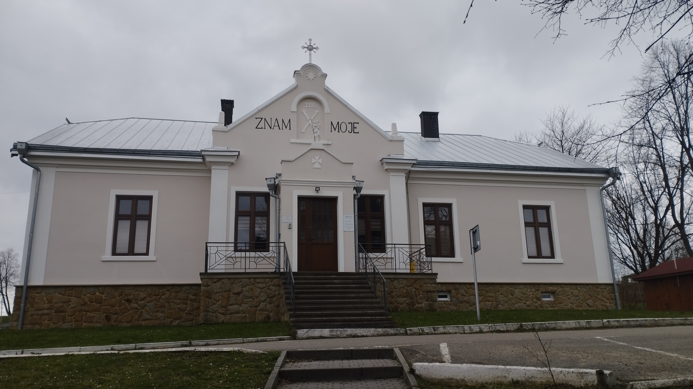
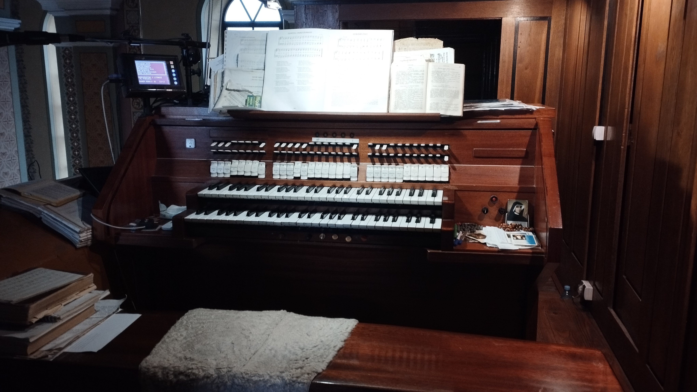
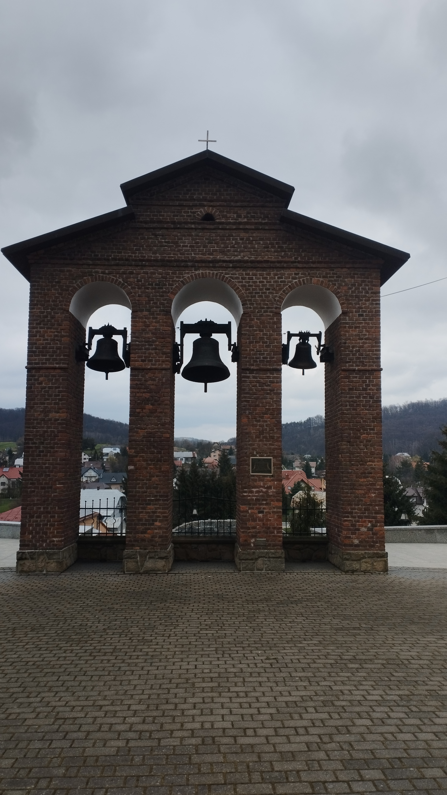
Najważniejsza świątynia Grabownicy Starzeńskiej.
Została wybudowana w stylu neogotyckim.
Pałac Starzeńskich
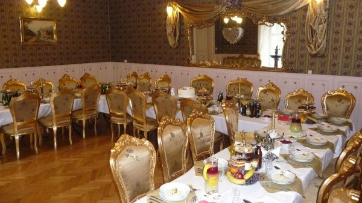
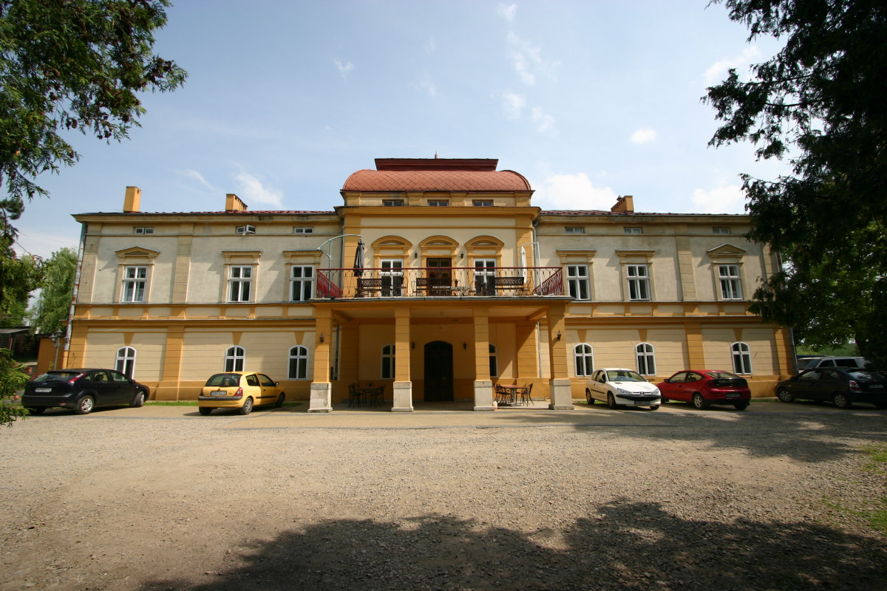
Historyczna siedziba właścicieli majątku.
Pomnik z Armatą
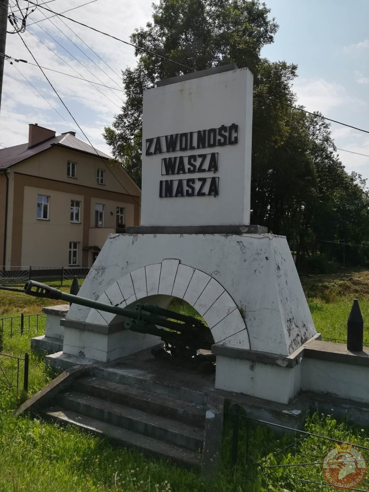
Pomnik „Za Wolność Waszą i Naszą”
jest jednym z symboli miejscowości.
Dąb Józef
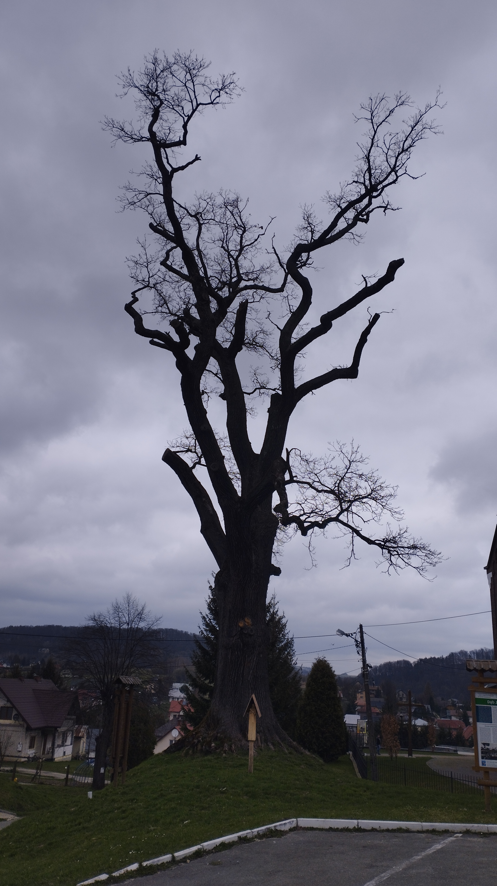
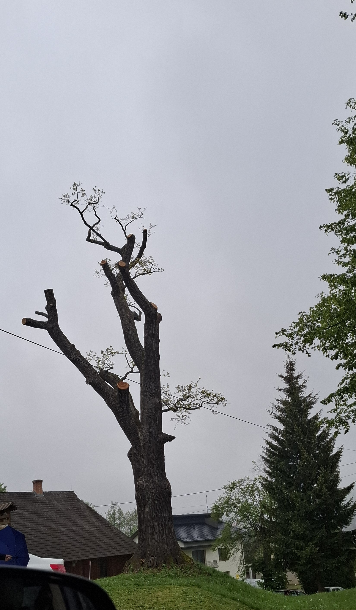
Pomnik przyrody będący jednym z najstarszych drzew okolicy.
Kultura Materialna i Duchowa
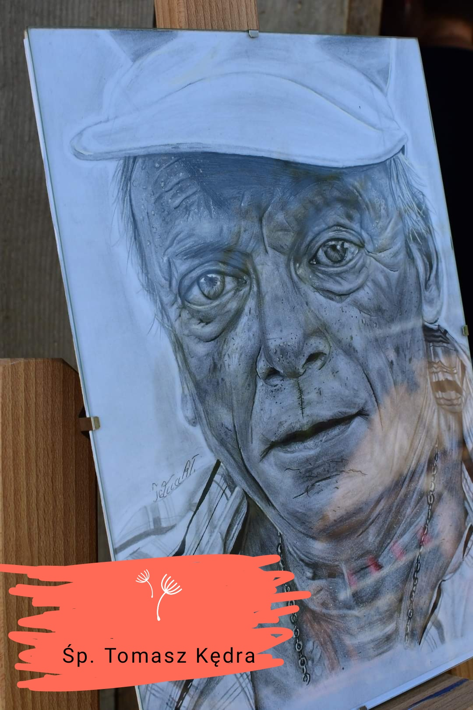
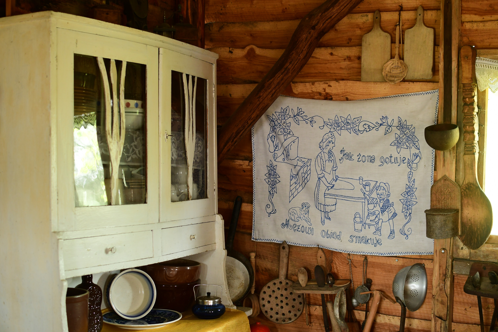
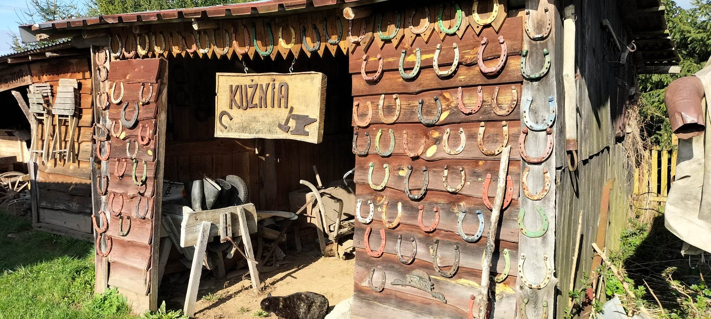
W Grabownicy zachowały się liczne tradycje ludowe,
obrzędy świąteczne oraz zwyczaje przekazywane
z pokolenia na pokolenie.
Działa Kapela Ludowa oraz Zespół Obrzędowy Graboszczanie.
Oświata
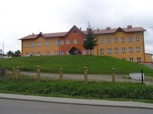
Szkolnictwo w Grabownicy ma wieloletnią tradycję.
Szkoła od wielu lat pełni ważną rolę w życiu miejscowości.
Sławni Ludzie
Z dziejami Grabownicy związany był ród Starzeńskich,
który odegrał ważną rolę w historii regionu.